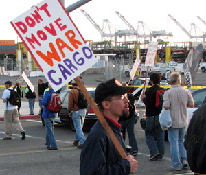

Submitted on Sat, 06/23/2007 - 2:10am
 Hashmeya (pictured, right, with a written message of thanks to the IWW for its solidarity with workers in Iraq) is a native of Basra and a 25-year veteran in the Iraqi Department of Electricity. While she is the first woman to rise democratically from the ranks to represent a national Iraqi labor union, she emphasizes that she is not alone - that there are many dedicated and committed union women in the forefront of the Iraqi labor movement.
Hashmeya (pictured, right, with a written message of thanks to the IWW for its solidarity with workers in Iraq) is a native of Basra and a 25-year veteran in the Iraqi Department of Electricity. While she is the first woman to rise democratically from the ranks to represent a national Iraqi labor union, she emphasizes that she is not alone - that there are many dedicated and committed union women in the forefront of the Iraqi labor movement.
Ten days ago, two top leaders of Iraq's labor movement, Hashmeya Muhsin Hussein , President of the Electrical Utility Workers Union, General Federation of Iraqi Workers (EUWU-GFIW))and Faleh Abood Umara, General Secretary of the Federation of Oil Unions (FOU) spoke throughout the San Francisco Bay Area as part of an Iraqi labor tour of the US. They spoke urgently of Iraqi labor's unified demand for the end of the brutal US occupation and sought for the support of US labor in rejecting the imposition of the Oil Law which the US is using to force the surrender of Iraqi oil resources to foreign corporations as the price of their withdrawal.
Submitted on Fri, 05/25/2007 - 11:37am
The Bay Area IWW participated in the organizing of this event and members attended the pickets.
By Steve Zeltser and Jeff Paterson, May 19, 2007
Dozens of anti-war protesters including the leadership and many members of the Oakland Education Association OEA joined the picket lines this morning and in the evening of the SSA (Stevedoring Services of America)shipping terminal in Oakland, California to protest the war and the lack of funding for schools in Oakland. The picketers demanded that the US get out of Iraq and called on other trade unionists throughout the United States to mobilize in action to stop the war.
The action which began at in the early morning before the first day shift of ILWU Local 10 longshoremen and women as well as longshore clerks of ILWU Local 34 was organized to encourage the dockworkers to honor the picket line which they are allowed to do under their contract. As a result of a political education campaign in the ILWU Local 10, most workers were fully in support of the picket and did not cross the line. Newly elected Democratic mayor Ronald Dellums had also sent a letter to the Port Action committee that organized the picket which declared that the war "had been a blunder" and said he opposed the war. The police however not only prevented anti-war picketer from driving to the docks in the morning but also stopped major news media from bringing their vans to the picketlines to cover the demonstration. The police when questioned by this reporter said that the news vans were not allowed in the area since it was a "safety issue". In 2003, the Oakland police in collaboration with the SSA company and state security forces launched a violent attack on a similar anti-war protest. They also shot at many ILWU members for the first time since the 1930's.
Submitted on Wed, 05/23/2007 - 2:40am
The following is not an IWW campaign. It is posted in solidarity. An injury to one is an injury to all!
A few weeks ago the entire crew (including the captain and officers) of the Hawaiian Chieftain (a historic "tall ship") were fired.
The ship was grossly understaffed, lacking several licenced crew and an education coordinator. The ship's income relies on providing educational sail training programs to paying customers. The crew who were present were expected to perform multiple duties outside of their stated job descriptions. They were overworked and underpaid. They were also expected to sail with a group of new inexperienced paying trainees. This was felt to be unsafe because the ship did not have the necessary compliment of experienced crew.
Submitted on Wed, 05/02/2007 - 3:19pm
 Article and Photo by By Sheri Levisay - The Argus Leader, May 2, 2007
Article and Photo by By Sheri Levisay - The Argus Leader, May 2, 2007
It's hard to get people to a rally about workers rights on a beautiful 70-degree day in Sioux Falls.
In fact, it's hard to get people interested on any day in Sioux Falls, said Mike Beaver, one of the organizers of a May Day Rally on Tuesday at Van Eps Park.
"People don't care," Beaver said.
But six people did care enough to show up near the Minnehaha County Courthouse, trickling in between 4 and 5 p.m.
The majority of them are active with the Industrial Workers of the World, "a solidarity union interested in immigrants rights, both legal and illegal," Beaver said.
Some of them looked the part. Beaver wore a T-shirt saying, "Not my president." Various piercings, tattoos, red-streaked hair. One smoked a cigar, another a pipe. One carried a police-style riot shield.
Travis Stuckey, another organizer, showed up a bit late. "It's the first time I've ever worked on May Day," he said.
He had passed out Spanish-language pamphlets at bus stops, near the John Morrell plant and other places where Hispanic workers were likely to gather.
As the activists waited, the discussion wandered from Cinco de Mayo to using cell phones to tell what time it is ("Man, you're paying $40 a month for a watch") to a new kind of dog food that reduces poop, then turned to the U.S. economy.
"There's maybe 20 years max before this country falls into the Third World" if we don't recover manufacturing jobs, Stuckey opined.
About 5:15, Stuckey went to his vehicle to pull out signs and literature. Chris Huska of Act Now to Stop War & End Racism exchanged pamphlets with Stuckey.
When they stood near Minnesota Avenue with signs, there were a few honks - hard to tell whether in accord or in anger.
None of the immigrants the group was trying to help showed up. But South Dakota's low pay and dearth of unions will keep these activists passing out workers rights pamphlets.
"It's needed here quite a bit," Beaver said.
Submitted on Sat, 03/24/2007 - 5:52pm
El Consejo General Ejecutivo del IWW dio su apoyo al segundo "Gran Paro Americano", día de huelga general y de acción por los derechos de los inmigrantes en los EEUU que tendrá lugar el 1 de mayo, Día Internacional del Trabajo.
El ímpetu crece y los organizadores esperan igualar o sobrepasar el exitoso "paro" del 2006. El IWW respaldó el primer Gran Paro Americano y muchos miembros participaron en marchas, acciones en el trabajo y otras actividades respondiendo al llamado.
Los oficiales del IWW alientan a los miembros, sucursales y aliados a involucrarse en este importante movimiento y demostrar nuestra solidaridad con los millones de inmigrantes que hoy día sufren ataques en tantos frentes. Para más información ver www.mayday2007.org